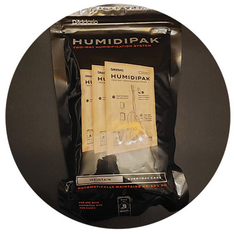
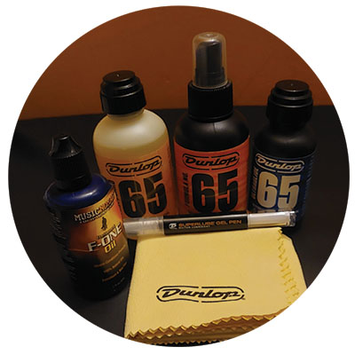

Tips
Humidification
For acoustic guitars, or other predominantly wooden variants such as the Fender Acoustasonic series, it is recommended to humidify your instrument. Whether kept in a well humidified room, or using something akin to the D’Addario humidipacks, preventing your guitar’s wood from drying out is a must.
Polishing and Cleaning
Changing your strings presents a good opportunity to polish and clean your guitar, as well as moisturizing your fret board. Similar to the body, moisturizing your fret board helps keep the wood from warping to maintain playing and tuning stability.
Neck Elevation
When performing any kind of guitar maintenance, it is best to elevate the neck of the guitar and provide support here. Many techs have stands to hold the guitar at the neck under the headstock, but at home any soft surface such as a pillow will do.